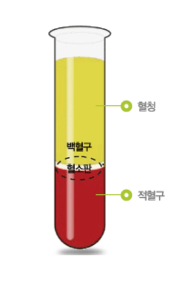

blood test
혈액검사
혈액검사
튜브 종류에 따라 다른 성분이 들어가 있어 검체기와 맞는 튜브를 사용해야 한다.

파란색 뚜껑의 튜브

plain (빨간색) / SST (노란색) 뚜껑의 튜브
초록색 뚜껑의 튜브
보라색 뚜껑의 튜브
응고방지처리 O 원심분리를 하여 얻은 액 혈장(Plasma)
응고인자 피부리노겐 존재 O
응고방지처리 X 원심분리를 하여 얻은 액 혈청(Serum)
응고인자 피부리노겐 존재 X
환자의 상태 확인
여러가지 사항에 의해 혈액검사 결과에 영향을 줄 수 있어 공복 유지 필수
혈액 원심 분리 시 혈장(혈청)과 혈구로 나뉨 전재 용적의 따른 적혈구 수치를 %로 나타내는 것을 PCV(Packed Cell Volume) 또는 HCT(Hematocrit) 라 칭함
혈액속에 있는 여러가지 혈구들을 세어주는 검사기기 EDTA Tube (보라색) 사용
WBC (White Blood Cell) 백혈구 RBC (Red Blood Cell) 적혈구 PLT (Platelet) 혈소판 HB (Hemoglobin) 헤모글로빈 PCV (Packed Cell Volume)사용방법 1.아이정보(고유번호)입력 2.EDTA 튜브가 기기 팁 끝까지 닿도록 넣어줌 3.팁 바로 뒤에 있는 보라색 버튼 클릭
간/ 신장과 같은 여러가지 장기의 기능, 호르몬 등을 평가하는 검사기기 Heparin 또는 Plain 튜브를 이용해 원심분리 후 검사진행
TP (Total PRotein) 전체 단백질ALB 알부민 Glabulin 글로블린 / TP = alb+glob (칩으로 존재X) GLUCOSE 혈당 ALT/AST/ALKP/GGT 간수치 (AST 간에서만 나오는 수치X)
T-Bil 토탈 빌리루빈 BUN/CTEA/IP 신장수치 CPK/LDH 근육수치 LIPASE/AMTLASE 췌장수치 TG/T-CHOL 지방수치NH3 암모니아 수치 CRP 염증 수치
(CBC 염증수치와 다를수있음)사용방법 1.검사항목 확인 후 칩 개봉 2.바코드가 아랫면으로 향하도록 쌓은후 추를 올려둠 3.tib b 에 피펫 팁 삽입 4.혈액튜브사이즈 확인 후 교체 후 검사 진행 5.환자정보입력후 진행
Heparin tube 사용
pH 체내 산성/ 알칼리성을 나타내는 수치Na/Cl 체내의 전해질 K+ 칼륨 전해질 Ca2 칼슘 HCT Hematocrit 사용방법 1.Analysis 클릭 2.Tip 꺼낸 후 혈액튜브에 넣은 (공기가 들어가면 X) 3.Aspirate 클릭 4.혈액튜브 제거후 팁에 묻은 혈액제거 5.팁 제자리로 6.아이 정보 입력 7.확인
응고 기능이 제대로 이루어지는지 확인하는 검사기기 Sodium Citrate tube 사용
PT 외인성 경로 (주사기를 이용)의 출혈에 의한 응고시간 측정APTT 내인성 경로(상처)의 출혈에 의한 응고시간 측정사용방법 1.카트리지 삽입 (방향체크 필수) 방울 모양이 보이도록 2.포장용지에 적혀있는 코드 입력 3.화면에 피를 넣으라고 하면 피를 피펫를 사용하여 떨어트려줌 (가득) 4.완료 후 컴으로 PT/ APTT 수기 입력 후 등록
사상충 진단을 위한 키트
췌장염 진단을 위한 키트
소변 속에 있어서는 안되는 인자 확인 측정 후 차트 입력 (사진촬영 후 Objective에 올림)
pH 소변 배출을 통해 체네 산/ 염기조절(결석이 생기는 요인이 될수있음)WBC 방광염 있을시 나타남(현미경 검사가 더 정확)Blood 방광에서 출혈이 있을시 나타남Protein어린강아지 혹은 요로감염에서 나올수있음 (정상적인 뇨에서는 단백질이 나와서는 안됨)
고령견일 경우 신장 자체의 문제 일 수 있음
Glucose 당뇨가 있을 경우 소변에서 당이 배출 됨 (일시적인 스트레스나 고혈당에서도 나올수 있음)Ketone 포도당이지방을 태울 때 나옴 (당뇨병의 경우 케톤이 몸에 쌓이면 매우 위험)Bilirubin 적혈구 파괴시 발견신장의 희석능력을 알아보기 위한 검사
여러가지 세균이나 백혈구 적혈구 등을 현미경으로 확인하기 위한 검사 과정
분변용 / 일반용 으로 나뉨
1번용액 : 고정액
2번용액 : 주황색의 염색용약
3번용액 : 파란(보라)색의 염색용약
사용방법 1. 샘플 채취 후 슬라이드 글라스에 염색 할 수 있도록 샘플을 묻힘 2. 염색용액에 10~15회 정도 용액에서 슬라이드 글라스를 흔들어 줌 3. 30초에서 1분 정도 머무르는 단계로 순서대로 진행 4. 샘플이 묻혀 있지 않은 면(뒷면)을 약하게 흐르는 물에 씻어줌 5. 슬라이트 글라시 뒷면으로 드라이기로 건조